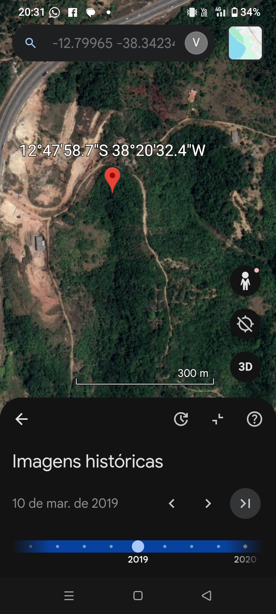
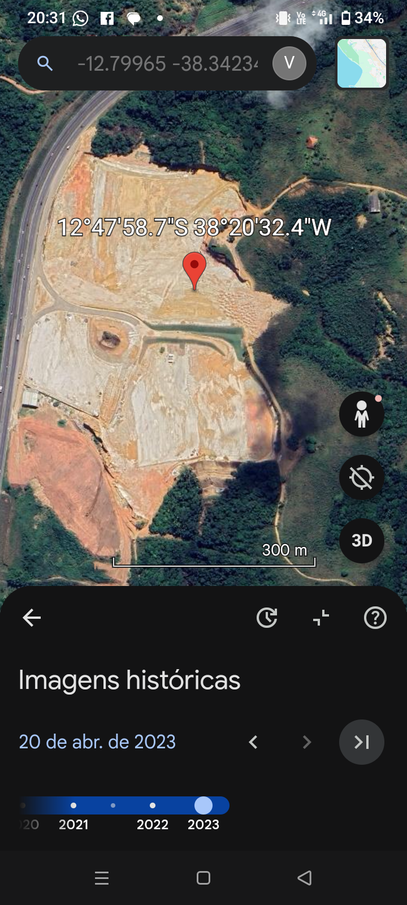
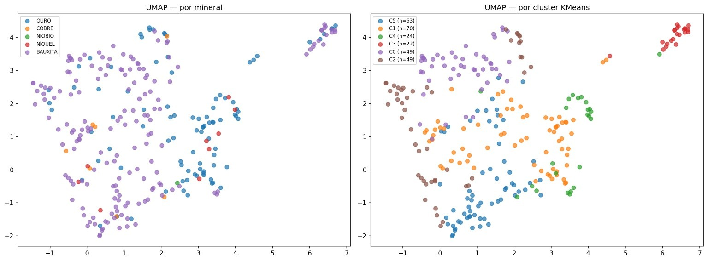
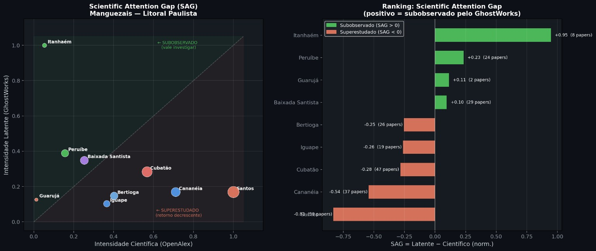
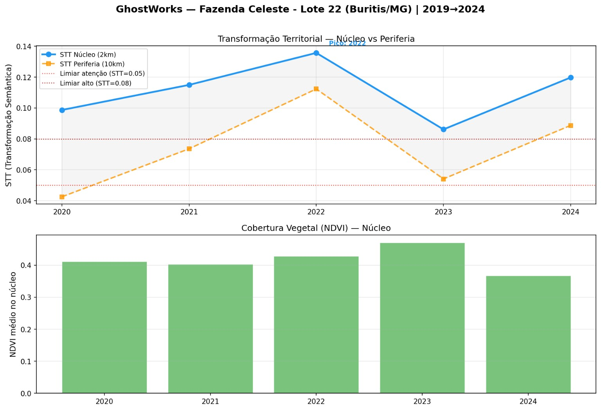

01 / Ver
O que mudou?
Imagens e séries temporais tornam visível uma transformação que uma fotografia isolada não mostraria.
GhostWorks já foi executado sobre o entorno da Acelen, em Candeias/BA. A análise organizou imagens históricas, métricas de transformação e perguntas de investigação para mostrar onde olhar primeiro — antes que uma mudança territorial vire apenas mais um ponto cego.
Não é mockup nem conversa sobre potencial. É uma capacidade já materializada em imagens comparáveis, métricas, hotspots, mapas e um relatório de investigação territorial.
Uma área, um período e uma pergunta entram. O GhostWorks devolve uma leitura organizada para que equipes técnicas, gestão e parceiros consigam discutir o mesmo território a partir de evidências visuais e temporais.
Imagens e séries temporais tornam visível uma transformação que uma fotografia isolada não mostraria.
Hotspots e trajetórias organizam atenção: nem todo ponto precisa ser investigado com a mesma urgência.
O sinal espacial volta como mapa, contexto, métricas e uma agenda objetiva para cruzar fontes e decidir próximos passos.
Em um raio de 5 km e no recorte de 2019 a 2023, o GhostWorks comparou o território no tempo, identificou áreas de transformação e reuniu outputs suficientes para orientar uma conversa de investigação territorial.
O par abaixo faz parte de um hotspot trabalhado no relatório histórico. A mudança visual é nítida: uma área de cobertura vegetal em 2019 aparece como superfície exposta e estruturada em 2023. O sistema não para na imagem: ele associa o ponto a trajetória, métricas, mapa e perguntas que podem ser verificadas.


“Como as transformações observáveis neste entorno se relacionam com os documentos, processos e decisões que já existem sobre a área?”
A mesma capacidade já gerou diferentes saídas: representação de padrões, contextualização territorial, trajetórias no tempo e relatórios de investigação. Cada output mostra uma etapa que já foi construída e usada.

Uma mesma projeção pode ser lida por referência mineral ou por agrupamentos. É assim que um conjunto de casos deixa de ser lista e passa a revelar estruturas que podem ser interrogadas.

O painel aproxima uma leitura territorial da atenção científica disponível e organiza onde uma diferença merece aprofundamento. É o mesmo princípio: sinais não ficam soltos, viram uma fila de perguntas.
O mesmo motor já foi reapontado para perguntas diferentes: buscar padrões fora de uma base conhecida, acompanhar a estabilidade de um ativo e localizar os primeiros movimentos de uma trajetória territorial.

Com âncoras minerárias e uma busca espacial no Pará, o GhostWorks devolveu 1.001 coordenadas ranqueadas. O histórico preserva duas conferências visuais posteriores em imagens históricas.

As séries históricas permitem distinguir um pico que se normaliza de uma trajetória persistente que se afasta do entorno e merece investigação dirigida.

Os outputs temporais mostram quando grupos de pontos começaram a mudar e como mineração, expansão agropecuária e outros regimes seguem ritmos diferentes.
O GhostWorks transforma esse ponto de partida em uma primeira leitura territorial: o que já é observável, onde a atenção deve se concentrar e que pergunta vale investigar em seguida.
Bahia → SIGMINE/Pará → séries de ativos → trajetórias de mudança. A mesma cadeia reapontada para novas perguntas.
Abrir materiais públicos ↗